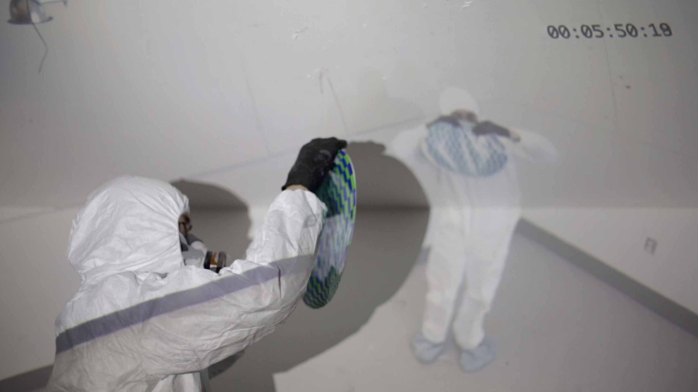
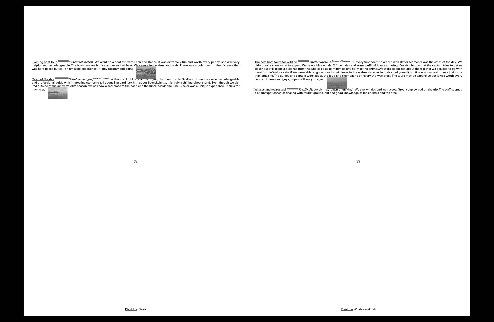
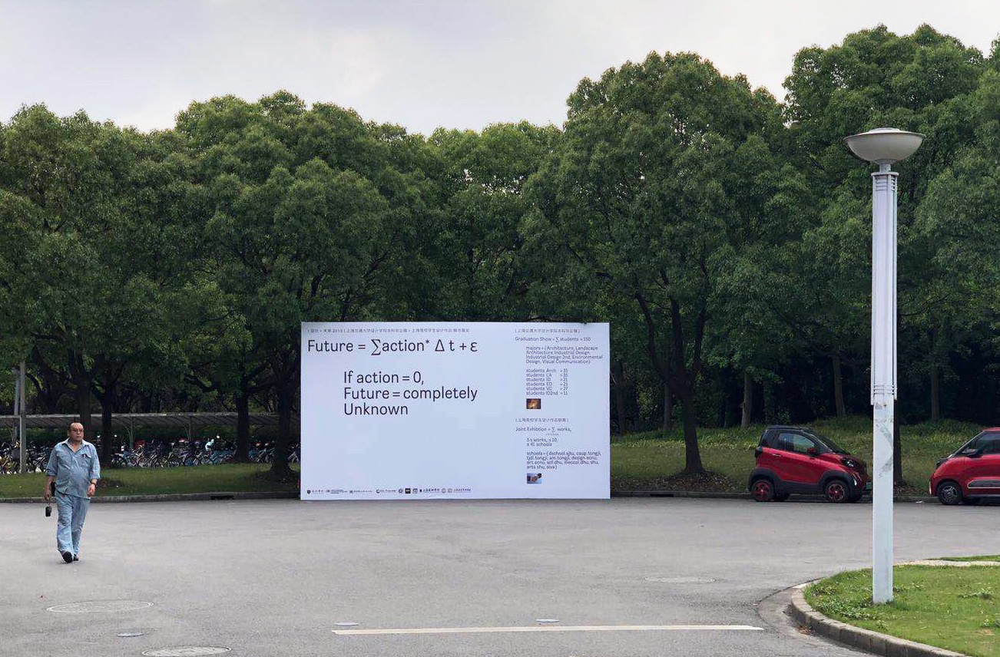

Hello world!
This is my personal website.
Contact:yuan.gao.yg353@yale.edu
Yuan Gao

 is a graphic designer. In 2019, I graduated from SJTU, After basic training in the same year I entered Yale School of Art to think why I do graphic deisgn.
is a graphic designer. In 2019, I graduated from SJTU, After basic training in the same year I entered Yale School of Art to think why I do graphic deisgn.
Generally speaking, the graphic designer’s webpage will put whatever award  they have won, so I also want to put it out of the worldly mindset. [Tokyo TDC seleced 2019, New York ADC bronze cube 2019, GDC(Graphic Gesign in china)gold prize 2019, Red-dot winner(2017,2018)]
they have won, so I also want to put it out of the worldly mindset. [Tokyo TDC seleced 2019, New York ADC bronze cube 2019, GDC(Graphic Gesign in china)gold prize 2019, Red-dot winner(2017,2018)]
This is a project [After Victor Papanek, Before that forest].jpg) starting from the history of art which explored the forest in front of human beings.
Design for human scale? &
In Design for Real World, Victor raised three main points: 1. Most design is carried out for well-to-do, middle class, middle-aged people living in developed societies. Designers have neglected the handicapped, the poor, the retarded, children and babies, the elderly, the obese, and people in developing countries, among others. 2. Design must be carried out by cross-disciplinary and interdisciplinary teams that include end users and workers. 3. Many design schools and designers work for a fantasy world (luxury hotels on the ocean floor, 3-D television systems, and other resource-wasting trivia) when they should be looking at the real world instead. &
Victor divided people according to social classes. This is completely the standard of division under Capitalism, so the real answer is that we design for money. I agree the point 2 when we solve practical problems in the whole system. About the point 3 – fantasy world – there is no absolute real world, we should pay more attention to the content itself, rather than care too much about the form. &
The main idea of this paragraph is based on Design for human scale by Victor Papanek.
Design for human Scale carries this question to its next logical step. After deciding on what and why, the next question is how? That is the core issue here. How can people be divided in the design process? How can design and people be brought together? &
But I think the question before that is the definition of human. So I try to discuss something after Victor Papanek, which is about a forest. &
After Victor Papanek, Before that forest &
During this year’s study time at Graphic design at Yale, every day I can’t help thinking about one question: why should I be a graphic designer? I think this problem is like a poisonous vine inside me, which constantly erodes my faith. Whenever I finish a design work, I sit down quietly and wonder why I want to do it. The main and magnificent initial idea makes it difficult for me to open my mouth. My face and ears are red, as if I am walking into a cave full of poisonous spiders. Frozen and desperate, I worked hard to reach a consensus, but it seemed like lightning floating in the air, so unreal, false, and gorgeous. I think I am afraid. I feel my cowardice and timidity.
This is a forest, dark and deep. I can see it lying there under the night, calm and indifferent. It is not that scary anymore. Yes, it is still chaotic, perplexingly intertwined. When you walk into the forest, the sky will disappear. To some extent, however, it is very clear, extremely clear. The chaotic branches are there. Each of them, every detail is there, intertwined. But they are there, unmoving. We just do not understand them. They are so beautiful. The reason why I like the night is because there are a lot of details hidden in the night; only some can be seen. When the sun rises, we want too much. Those are our desires. I don't know why we have these desires. They can't make us feel happy, floating there, greasy and colorful, in the bottomless abyss. This forest is like my garden of Eden. I am drunk there, and I am at such ease that I don't want to leave. But, if this forest is only used as a passageway to another place, then everything here is trying to confuse me, and trap me here. They don't want me to get that hidden treasure at the end. But how big is this forest? What is behind it? Will there be no treasure at all, an endless forest? All of these answers are unknown. Before this forest I wrote this text. I want to go in, and go in deeply, all the way. It seems like I see the target, but I know that’s not all of it.
We have been trying to ridicule or break something. We are not good at sarcasm, our weaknesses, and our evil. This is bad, because we are not almighty. We are weak. I don’t want to ridicule or break anything. These boring debates always have two opinions. I’m willing to accept these. It is not a problem. The world is already chaotic. The atoms are disordered. We are squeezed out of shape. I don’t mind a little chaos; I even hope for it. I would like to see everyone reveal their worst side, because it is just like people, real people. Until now we have been talking about people, design for human scale, Victor Papanek’s primary ambition, so I think we need to talk about human first.
Desire is the source of all our problems. Human beings have become too weak. We all have a forest of our own. It is giant. It makes us fall apart. Our desires push things to extremes. Extreme self-confidence and unconfidence, individuals and groups, excitement and anger, which contain too many arguments on the other side of the dialectics of one side. Confusion, Weakness, suffocation. Under the pressure, we are lost in the middle, unable to catch anything -- chaotic, gorgeous, charming. This is a forest that belongs to everyone.
I fight against this era; philosophy of art can transcend an era itself. But I am willing to fight this era, because I am young. I refuse to enter this forest. From the outside, I look at it and am satisfied, or I enter partially but then retreat. I don't want to cover up my weakness and build a sense of collective consciousness or morals. Social norms collapse, new consciousness is re-established. I face the real me, forgive myself, examine my ugly body, and accept that pain will come after. Pain is inevitable, tearing off the template that can be copied and absentminded, before the forest, after Victor Papanek.
Under pure thinking, it is ugly, so ugly; it is almost beautiful. I am fascinated by such ugliness. Does design have any influence on thinking itself? No, not at all. The road ahead is barren. Thinking itself embraces all good and ugly, and that may be the area behind the forest—whether it is a light, a mist, we will never get there. I know I will never be there, and I must not be able to reach it under special circumstances, so why should I go on? Desire. Because I want to do it. For the man in the dark, this is all my value. I have no value if my soul is incomplete; human cannot shape chaos into base common. Human beings need others to allude themselves and then they can live.
The value of design is nothing special. It is just a link in the glut of consumerism. Design evolved into the self-consumption behavior of designers in this era, where they carry out their own carnival. All these behaviors fall into self-consciousness; we are not designing for humans, but we are designing for greed. Under the greedy twilight, the utopia of designers is faintly revealed. Is there a forest there? We walk in again. We are so ridiculous that this is what we learn, what we do, and the next step is to scatter the humanistic glory into this forest. When we come out, an what we have left? The ugly and cold heart under the old flesh is staggering step by step toward a mountain under the lake.
starting from the history of art which explored the forest in front of human beings.
Design for human scale? &
In Design for Real World, Victor raised three main points: 1. Most design is carried out for well-to-do, middle class, middle-aged people living in developed societies. Designers have neglected the handicapped, the poor, the retarded, children and babies, the elderly, the obese, and people in developing countries, among others. 2. Design must be carried out by cross-disciplinary and interdisciplinary teams that include end users and workers. 3. Many design schools and designers work for a fantasy world (luxury hotels on the ocean floor, 3-D television systems, and other resource-wasting trivia) when they should be looking at the real world instead. &
Victor divided people according to social classes. This is completely the standard of division under Capitalism, so the real answer is that we design for money. I agree the point 2 when we solve practical problems in the whole system. About the point 3 – fantasy world – there is no absolute real world, we should pay more attention to the content itself, rather than care too much about the form. &
The main idea of this paragraph is based on Design for human scale by Victor Papanek.
Design for human Scale carries this question to its next logical step. After deciding on what and why, the next question is how? That is the core issue here. How can people be divided in the design process? How can design and people be brought together? &
But I think the question before that is the definition of human. So I try to discuss something after Victor Papanek, which is about a forest. &
After Victor Papanek, Before that forest &
During this year’s study time at Graphic design at Yale, every day I can’t help thinking about one question: why should I be a graphic designer? I think this problem is like a poisonous vine inside me, which constantly erodes my faith. Whenever I finish a design work, I sit down quietly and wonder why I want to do it. The main and magnificent initial idea makes it difficult for me to open my mouth. My face and ears are red, as if I am walking into a cave full of poisonous spiders. Frozen and desperate, I worked hard to reach a consensus, but it seemed like lightning floating in the air, so unreal, false, and gorgeous. I think I am afraid. I feel my cowardice and timidity.
This is a forest, dark and deep. I can see it lying there under the night, calm and indifferent. It is not that scary anymore. Yes, it is still chaotic, perplexingly intertwined. When you walk into the forest, the sky will disappear. To some extent, however, it is very clear, extremely clear. The chaotic branches are there. Each of them, every detail is there, intertwined. But they are there, unmoving. We just do not understand them. They are so beautiful. The reason why I like the night is because there are a lot of details hidden in the night; only some can be seen. When the sun rises, we want too much. Those are our desires. I don't know why we have these desires. They can't make us feel happy, floating there, greasy and colorful, in the bottomless abyss. This forest is like my garden of Eden. I am drunk there, and I am at such ease that I don't want to leave. But, if this forest is only used as a passageway to another place, then everything here is trying to confuse me, and trap me here. They don't want me to get that hidden treasure at the end. But how big is this forest? What is behind it? Will there be no treasure at all, an endless forest? All of these answers are unknown. Before this forest I wrote this text. I want to go in, and go in deeply, all the way. It seems like I see the target, but I know that’s not all of it.
We have been trying to ridicule or break something. We are not good at sarcasm, our weaknesses, and our evil. This is bad, because we are not almighty. We are weak. I don’t want to ridicule or break anything. These boring debates always have two opinions. I’m willing to accept these. It is not a problem. The world is already chaotic. The atoms are disordered. We are squeezed out of shape. I don’t mind a little chaos; I even hope for it. I would like to see everyone reveal their worst side, because it is just like people, real people. Until now we have been talking about people, design for human scale, Victor Papanek’s primary ambition, so I think we need to talk about human first.
Desire is the source of all our problems. Human beings have become too weak. We all have a forest of our own. It is giant. It makes us fall apart. Our desires push things to extremes. Extreme self-confidence and unconfidence, individuals and groups, excitement and anger, which contain too many arguments on the other side of the dialectics of one side. Confusion, Weakness, suffocation. Under the pressure, we are lost in the middle, unable to catch anything -- chaotic, gorgeous, charming. This is a forest that belongs to everyone.
I fight against this era; philosophy of art can transcend an era itself. But I am willing to fight this era, because I am young. I refuse to enter this forest. From the outside, I look at it and am satisfied, or I enter partially but then retreat. I don't want to cover up my weakness and build a sense of collective consciousness or morals. Social norms collapse, new consciousness is re-established. I face the real me, forgive myself, examine my ugly body, and accept that pain will come after. Pain is inevitable, tearing off the template that can be copied and absentminded, before the forest, after Victor Papanek.
Under pure thinking, it is ugly, so ugly; it is almost beautiful. I am fascinated by such ugliness. Does design have any influence on thinking itself? No, not at all. The road ahead is barren. Thinking itself embraces all good and ugly, and that may be the area behind the forest—whether it is a light, a mist, we will never get there. I know I will never be there, and I must not be able to reach it under special circumstances, so why should I go on? Desire. Because I want to do it. For the man in the dark, this is all my value. I have no value if my soul is incomplete; human cannot shape chaos into base common. Human beings need others to allude themselves and then they can live.
The value of design is nothing special. It is just a link in the glut of consumerism. Design evolved into the self-consumption behavior of designers in this era, where they carry out their own carnival. All these behaviors fall into self-consciousness; we are not designing for humans, but we are designing for greed. Under the greedy twilight, the utopia of designers is faintly revealed. Is there a forest there? We walk in again. We are so ridiculous that this is what we learn, what we do, and the next step is to scatter the humanistic glory into this forest. When we come out, an what we have left? The ugly and cold heart under the old flesh is staggering step by step toward a mountain under the lake.
This
Poster [Visting artist - Julika!] 
is based on Forever, video installation, 2006
(Julika), I try to make it funny, collaboration with
Wenwen Zhang.
Paprika! -[Wild] Vol.5 Issue.15
 Humans have lived in intimate relationship with so-called “Wild” landscapes since time immemorial. But our current notion of Wilderness is a fabrication, an ongoing colonial project of cleansing under a racialized veil of purity.[1] It relies on a myth of nature without people, consecrating the human-nature binary. The separation of nature and culture is a feature of the “one-world world,” the Eurocentric vision that there is only one reality, which can be understood through the modern Western sciences.[2] The one-world world “present[s] itself as exclusive and cancels the possibilities for what lies beyond its limits.”[3] It inscribes its ideas of who should be in the Wild, and what they should be doing there, on the landscape itself. & For this issue of Paprika!, we invited contributors to enter into a radical rethinking of Wilderness. We received a diverse cast of submissions—some from architects, some from scholars in other fields—all searching for cracks in the artifice of the human-nature binary. Many of these contributions, themselves acts of optimism, experiment with ways to “relinquish our hold on the one-world world” and “embrace pluriversality.”[4] With regards to the Western notion of “Wilderness,” the point is not to throw the baby out with the bathwater, because, in fact, there is no baby to be found.[5] Instead, our contributors commune with archival mold, reframe the layers of the Camargue, orienteer the contradictions of the Guadalupe Mountains, reject Mars, reimagine land sharing, and encounter living rocks. In sum, they embrace multiple realities, co-existing and intersecting across space and time. & As a practice, this type of work opens us up to new modes of thinking about our role here on Earth. By engaging alternate methods of seeing and understanding the world around us as neither natural and wild, nor fabricated and controlled, we hope this issue serves as an entry point into the larger collective and ongoing work of reimagining our planetary relationships and opening spaces for abundant futures.[6]
{[1] Kosek, Jake. 2006. “Racial Degradation and Environmental Anxieties.” 142-182. in Understories: The Political Life of Forests in Northern New Mexico, Durham, NC: Duke University Press.
[2] Law, John. 2015. “What’s Wrong with a One-World World?” Distinktion: Journal of Social Theory 16(1): 126–39.
[3] Cadena, Marisol de la, and Mario Blaser, eds. 2018.
A World of Many Worlds. Durham: Duke University Press.
[4] At this month’s International Society of Tropical Foresters conference, Juanita Sundberg challenged the audience to “relinquish our hold on one-world world, which gives us so much authority, and embrace pluriversality, an openness to other ways of being and worlding.”
[5] See Sandra Harding’s introduction to Whose Science? Whose Knowledge?: Thinking from Women’s Lives where she calls for the creation of diverse New Sciences rather than a complete overhaul of a monolithic science. See also our weekly cartoon.
[6] Collard, Rosemary-Claire, Jessica Dempsey, and Juanita Sundberg. 2015. “A Manifesto for Abundant Futures.” Annals of the Association of American Geographers 105(2): 322–30.}
Humans have lived in intimate relationship with so-called “Wild” landscapes since time immemorial. But our current notion of Wilderness is a fabrication, an ongoing colonial project of cleansing under a racialized veil of purity.[1] It relies on a myth of nature without people, consecrating the human-nature binary. The separation of nature and culture is a feature of the “one-world world,” the Eurocentric vision that there is only one reality, which can be understood through the modern Western sciences.[2] The one-world world “present[s] itself as exclusive and cancels the possibilities for what lies beyond its limits.”[3] It inscribes its ideas of who should be in the Wild, and what they should be doing there, on the landscape itself. & For this issue of Paprika!, we invited contributors to enter into a radical rethinking of Wilderness. We received a diverse cast of submissions—some from architects, some from scholars in other fields—all searching for cracks in the artifice of the human-nature binary. Many of these contributions, themselves acts of optimism, experiment with ways to “relinquish our hold on the one-world world” and “embrace pluriversality.”[4] With regards to the Western notion of “Wilderness,” the point is not to throw the baby out with the bathwater, because, in fact, there is no baby to be found.[5] Instead, our contributors commune with archival mold, reframe the layers of the Camargue, orienteer the contradictions of the Guadalupe Mountains, reject Mars, reimagine land sharing, and encounter living rocks. In sum, they embrace multiple realities, co-existing and intersecting across space and time. & As a practice, this type of work opens us up to new modes of thinking about our role here on Earth. By engaging alternate methods of seeing and understanding the world around us as neither natural and wild, nor fabricated and controlled, we hope this issue serves as an entry point into the larger collective and ongoing work of reimagining our planetary relationships and opening spaces for abundant futures.[6]
{[1] Kosek, Jake. 2006. “Racial Degradation and Environmental Anxieties.” 142-182. in Understories: The Political Life of Forests in Northern New Mexico, Durham, NC: Duke University Press.
[2] Law, John. 2015. “What’s Wrong with a One-World World?” Distinktion: Journal of Social Theory 16(1): 126–39.
[3] Cadena, Marisol de la, and Mario Blaser, eds. 2018.
A World of Many Worlds. Durham: Duke University Press.
[4] At this month’s International Society of Tropical Foresters conference, Juanita Sundberg challenged the audience to “relinquish our hold on one-world world, which gives us so much authority, and embrace pluriversality, an openness to other ways of being and worlding.”
[5] See Sandra Harding’s introduction to Whose Science? Whose Knowledge?: Thinking from Women’s Lives where she calls for the creation of diverse New Sciences rather than a complete overhaul of a monolithic science. See also our weekly cartoon.
[6] Collard, Rosemary-Claire, Jessica Dempsey, and Juanita Sundberg. 2015. “A Manifesto for Abundant Futures.” Annals of the Association of American Geographers 105(2): 322–30.}

 Credits:
Issue Editors: Blanca Begert, Jen Shin
/
Coordinating Editors: Angela Lufkin, Adam Thibodeaux, Sarah Weiss, Max Wirsing
/
Graphic Designers: Yuan Gao, Wenwen Zhang
/
Publishers: Audrey Tseng Fischer, Morgan Kerber, Liwei Wang
Credits:
Issue Editors: Blanca Begert, Jen Shin
/
Coordinating Editors: Angela Lufkin, Adam Thibodeaux, Sarah Weiss, Max Wirsing
/
Graphic Designers: Yuan Gao, Wenwen Zhang
/
Publishers: Audrey Tseng Fischer, Morgan Kerber, Liwei Wang
[Art smoker]
 is a campaign base project which support smoking in the art school.
{Everyone practices his art in his own way, if he knows the joy that rises like arrows to the astral layers, or that other joy that goes down into the minds of corpse floeers and fertile spasms. Does anyone think he has found apsychic base common to all mankind? How can one expect to put order into the chasos that constitutes that infinite and shapeless variation...Man?} - Manifesto, Julian Rosefeldt So I think just smoke if we can do that!
is a campaign base project which support smoking in the art school.
{Everyone practices his art in his own way, if he knows the joy that rises like arrows to the astral layers, or that other joy that goes down into the minds of corpse floeers and fertile spasms. Does anyone think he has found apsychic base common to all mankind? How can one expect to put order into the chasos that constitutes that infinite and shapeless variation...Man?} - Manifesto, Julian Rosefeldt So I think just smoke if we can do that!
A poster about the [Humanistic spirit]
 After about 100 years of the Industrial Revolution, a capitalist market economy has gradually taken shape, and we now have a highly industrial society. As a surfeit of industrialized goods entered the market, corporate identity has emerged as a kind of communication between companies and consumers to help them distinguish among comparable products and services. Attributes of corporate identity serve as shorthand to tell customers what niche their products fill – both what practical needs they address and what values the company promotes through those products. &
If a successful corporate brand needs to assure consumers of quality products and build an emotional connection with them, it falls to graphic designers to create the visual language to communicate this. Ideally, graphic design would serve as a matchmaking force between companies and consumers, helping people find products that fill their practical and emotional needs. In reality, however, graphic designers are frequently subservient to the needs of corporate marketing, which typically is built on false and inflated promises. Sometimes designers genuinely believe in the messages their work sends; other times graphic design deceives, telling the public that this thing is worth doing in your life, or this product is worth buying, although this may not be true. So I think we are fail, the fact is designer can’t defined which things are valuable, and they are also feeling comfusing as human beings. &
Compared with industrial design, graphic design has less role to play. We limited by the productions, some of graphic designer trying to find answers from the art area, it is not a bad way, But I always believe in solving the problem in the most direct method. Graphic designer can use our methods to help people find happiness, Comparing with against society or into the embrace of art forget what we really need to do. Happiness is closely related to humanistic spirit, which is in contradiction with the pure commodity economy. So the emergence of the graphic design attempts to solve such an irreconcilable situation. Sometimes we are a deceiver, we tell the public that this thing is worth doing in your life, or this product is worth buying, although sometimes we are not really sure. Or sometimes we are convinced that what we are doing is right. We are trying to repair the contradiction between the commodity economy and the humanistic spirit, but it has conflicts with more humanistic spirit and other areas that have already formed, especially when technology is integrated into the commodity economy. The medium of communication and commodity transactions has also changed, and many designers are immersed in new media technologies but forget about the problems or human spirit that originally occurred. Or they can indulge in the old media step by step and become a point in the meaningless commodification, ignoring the most problematic problem. Because the era of commoditization will pass in one day and enter the next era, what is our meaning in this era? Will we bring the same problem to the next era. This is a general question for the graphic designers. Sometimes it is hopeless to have such responsibility, how can we coordinate the issues of humanistic spirit and commodity economy? This is a huge and difficult task, And even many graphic designers are unaware of this problem. They have become microphones and tools, and have forgotten the responsibility they should fulfill as human beings. Perhaps such a demand is too harsh, so we should not ask every designer to solve such a problem. Someone must meet the inferior needs in the society. This way of solving the problem is equivalent to abandon the part of humanistic spirit. At the same time, everything is included in the category of the commodity economy, literature, academics, and art, so that all of them are in the service of the commodity economy, but this cannot be equated with the fact that we should really give up the humanistic spirit and completely compromise with the commodity economy. We still need to resolve the confusion which caused by the contradiction between humanistic spirit and the commodity economy, and there is still have beauty and light around them. This is the meaning of why we design and why we live as a human being.
I am willing to be the one who waved the flag.
After about 100 years of the Industrial Revolution, a capitalist market economy has gradually taken shape, and we now have a highly industrial society. As a surfeit of industrialized goods entered the market, corporate identity has emerged as a kind of communication between companies and consumers to help them distinguish among comparable products and services. Attributes of corporate identity serve as shorthand to tell customers what niche their products fill – both what practical needs they address and what values the company promotes through those products. &
If a successful corporate brand needs to assure consumers of quality products and build an emotional connection with them, it falls to graphic designers to create the visual language to communicate this. Ideally, graphic design would serve as a matchmaking force between companies and consumers, helping people find products that fill their practical and emotional needs. In reality, however, graphic designers are frequently subservient to the needs of corporate marketing, which typically is built on false and inflated promises. Sometimes designers genuinely believe in the messages their work sends; other times graphic design deceives, telling the public that this thing is worth doing in your life, or this product is worth buying, although this may not be true. So I think we are fail, the fact is designer can’t defined which things are valuable, and they are also feeling comfusing as human beings. &
Compared with industrial design, graphic design has less role to play. We limited by the productions, some of graphic designer trying to find answers from the art area, it is not a bad way, But I always believe in solving the problem in the most direct method. Graphic designer can use our methods to help people find happiness, Comparing with against society or into the embrace of art forget what we really need to do. Happiness is closely related to humanistic spirit, which is in contradiction with the pure commodity economy. So the emergence of the graphic design attempts to solve such an irreconcilable situation. Sometimes we are a deceiver, we tell the public that this thing is worth doing in your life, or this product is worth buying, although sometimes we are not really sure. Or sometimes we are convinced that what we are doing is right. We are trying to repair the contradiction between the commodity economy and the humanistic spirit, but it has conflicts with more humanistic spirit and other areas that have already formed, especially when technology is integrated into the commodity economy. The medium of communication and commodity transactions has also changed, and many designers are immersed in new media technologies but forget about the problems or human spirit that originally occurred. Or they can indulge in the old media step by step and become a point in the meaningless commodification, ignoring the most problematic problem. Because the era of commoditization will pass in one day and enter the next era, what is our meaning in this era? Will we bring the same problem to the next era. This is a general question for the graphic designers. Sometimes it is hopeless to have such responsibility, how can we coordinate the issues of humanistic spirit and commodity economy? This is a huge and difficult task, And even many graphic designers are unaware of this problem. They have become microphones and tools, and have forgotten the responsibility they should fulfill as human beings. Perhaps such a demand is too harsh, so we should not ask every designer to solve such a problem. Someone must meet the inferior needs in the society. This way of solving the problem is equivalent to abandon the part of humanistic spirit. At the same time, everything is included in the category of the commodity economy, literature, academics, and art, so that all of them are in the service of the commodity economy, but this cannot be equated with the fact that we should really give up the humanistic spirit and completely compromise with the commodity economy. We still need to resolve the confusion which caused by the contradiction between humanistic spirit and the commodity economy, and there is still have beauty and light around them. This is the meaning of why we design and why we live as a human being.
I am willing to be the one who waved the flag.
website!
Website!
 website!
Website!
This is my initial attempt to derive the design to a web page, and the construction of this web page is also a continuous attempt from the basic HTML language to the CSS language.
website!
Website!
This is my initial attempt to derive the design to a web page, and the construction of this web page is also a continuous attempt from the basic HTML language to the CSS language.
[The Mountian]
 Which is a poster made for visting artist Rick Alverson screening the mountian collaboration with Wenwen Zhang. We watched the moive a lot of times before start the design, the film still make us confusing.
Actully, we are not confused about what the movie wants to say, but the distant mountains in the mist.
Which is a poster made for visting artist Rick Alverson screening the mountian collaboration with Wenwen Zhang. We watched the moive a lot of times before start the design, the film still make us confusing.
Actully, we are not confused about what the movie wants to say, but the distant mountains in the mist.
This is a video-based project about [explanation]

, the theme is about environmental protection, but I think environmental protection is a problem that human beings cannot realize actively which is a passive or forced behavior, so I want to discuss this fact more.
When we see the huge blue beautiful magic earth, this is true that we own it. We don't need to pay something but we can trample it in every piece, we can rape it again and again, we can pull on it, and the earth will give us a smile as return. We are used to doing this, but now why do we shout slogans to protect the earth suddenly, take care of it? Do we realize that we are really doing something wrong? We want speed, height, and beauty. We think we are clever, huge, humble. Look at us. All the environmental protection is fake. &
We have no difference compared to the animal. We are so arrogant to say that we want to fix the earth, the dirt we make. It is just like we beat a man, fracture his rib with a stick, cut off his feet with knife, and send him to the hospital, and tell him this is the best hospital in the world and you will be ok. This is humanity on our body, generosity we publicize, the greatness we think, when we talk about the capitalism, social systems, contemporary art, freedom, morality, beauty. Look at us, we are just a bunch of freaks that are constantly breeding. We believe we have a cause but we don’t, we pretend that we have a lot of things to do. Does that mean we have value? No, you are just a part of the this super huge machine. Never stop, struggling forward. &
I don’t want to tell you any things that I think are true or that you need to follow. Everyone can have their opinions and do whatever they want to do. Of course they can be a part of this shit machine and adore their god, have their fake beliefs. There is no error to pursue their goals, so I just think the Earth deserve his revenge, and we deserve to die. Just let us see.
This is a video-based project describe a peom
[Dyslexic]
[ill-timed human]
is a pamphlet based on a island (Svalbard) near the Arctic, This pamphlet is made up of three parts, the Bible: Book of Genesis, Svalbard nature and history and a paragraph of text I wrote. Svalbard nature and history is a detailed geography handbook about Svalbard, But the content has been replaced by the feedback of local tourists. In this so cold, north, 3000-people’s island. It still be totally controlled by our Social, commercial world. tourism, mining industry covered this wonderful place. Just like a big machine everyone is a part of this island. It shocked me, it how beautiful in this island maybe which is a place for human to find their arrogant, presumptuous, fool. But I think we failed. Maybe it will make you understand why this pamphlet named ill-timed human and the real freedom means.
[Design+Future 2019] 
is my graduation exhibition, I am also responsible for the visual identity of the exhibition with Lin Tao.